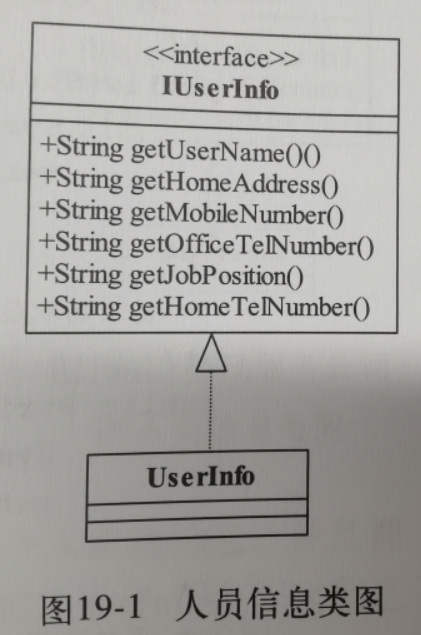
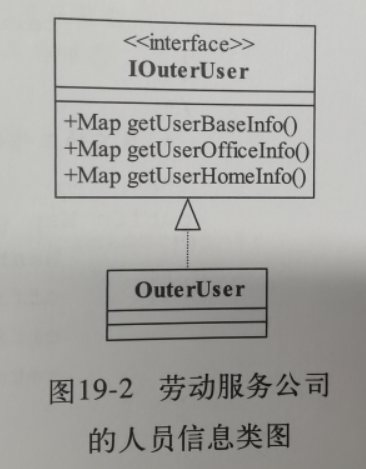
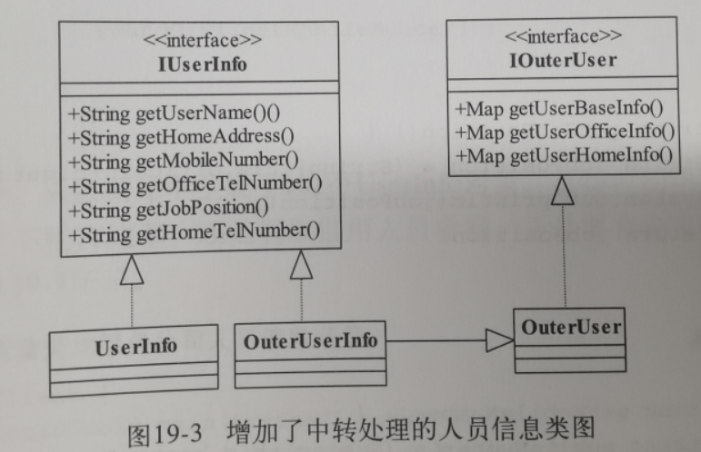
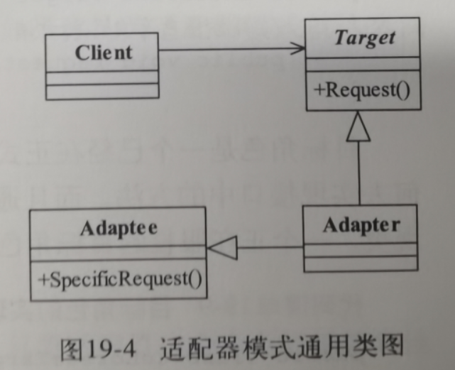
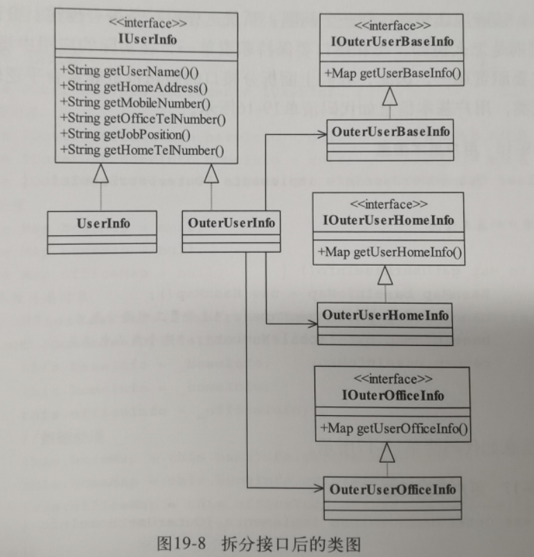
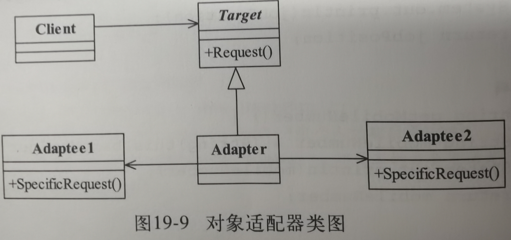

19.适配器模式
1.例子引入
需求:记录人员的信息
IUserInfo抽象接口:
定义了人员信息所需要的信息
UserInfo具体信息类:
具体的记录接口定义的信息

劳务公司不同的人员信息记录方式
IOuterUser接口:
定义所有外部人员需要的信息
OuterUser外部人员实现类:
实现接口定义的具体信息

为了可以用上劳务公司的人员数据
OuterUserInfo外部人员信息转换接口:
我们使用这个类来读取OuterUser的信息,一方面他通过继承OuterUser来获取劳务公司信息,一方面又实现IUserInfo接口来给我们提供想要的信息.

2.正式定义
Convert the interface of a class into another interface clients expece.Adapter lets classes work togethere that couldn;t otherwise because of incompatible interfaces.
翻译:将一个类的接口变换成客户端所期待的另一种接口,从而使原本因接口不匹配而无法再一起工作的两个类能够在一起工作
Target目标对象:
期望使用的接口
Adaptee源对象:
原始拥有的数据和信息
Adapter适配器对象:
把Adaptee源对象的信息翻译成Target需要的.
Client客户对象:
客户对象向Target发送需求,然后Target通过Adapter的翻译拿到Adaptee源对象的信息.

现实例子:
可以认为Target是中文字幕,Adaptee是英文原版字幕看不懂,然后Adapter是自动翻译软件,把英文翻译成中文字幕,这样Client客户对象就可以看中文字幕了,实际上幕后翻译工具Adapter处理了转换.
3.应用
优点:
1.普适性:只要翻译做的好,可以让两个没有关系的类一起工作
2.封装了复杂性,客户只需要知道Target对象就行了,至于源角色是什么,不需要了解
3.提供了复用性,可以让源角色在不同领域使用
4.灵活性好,因为唯一的关联就是适配器,所以如果不想要,删掉适配器不会带来什么影响.
4.扩展
情形:如果实际上劳务公司的接口不止一个,又不支持多继承,那要怎么处理?
解决方案也很简单,直接通过引用让OuterUserInfo获取这些不同对象的实例,然后整合数据,委托给这些对象获取数据,然后翻译

这个模式叫做对象适配器
Adapter对象适配器:
他负责把需求委托给不同对象处理,只是现在负责处理的类多一些了.原本的类适配器是通过继承,对象适配器是对对象合成关系,或者说关联的关系.
